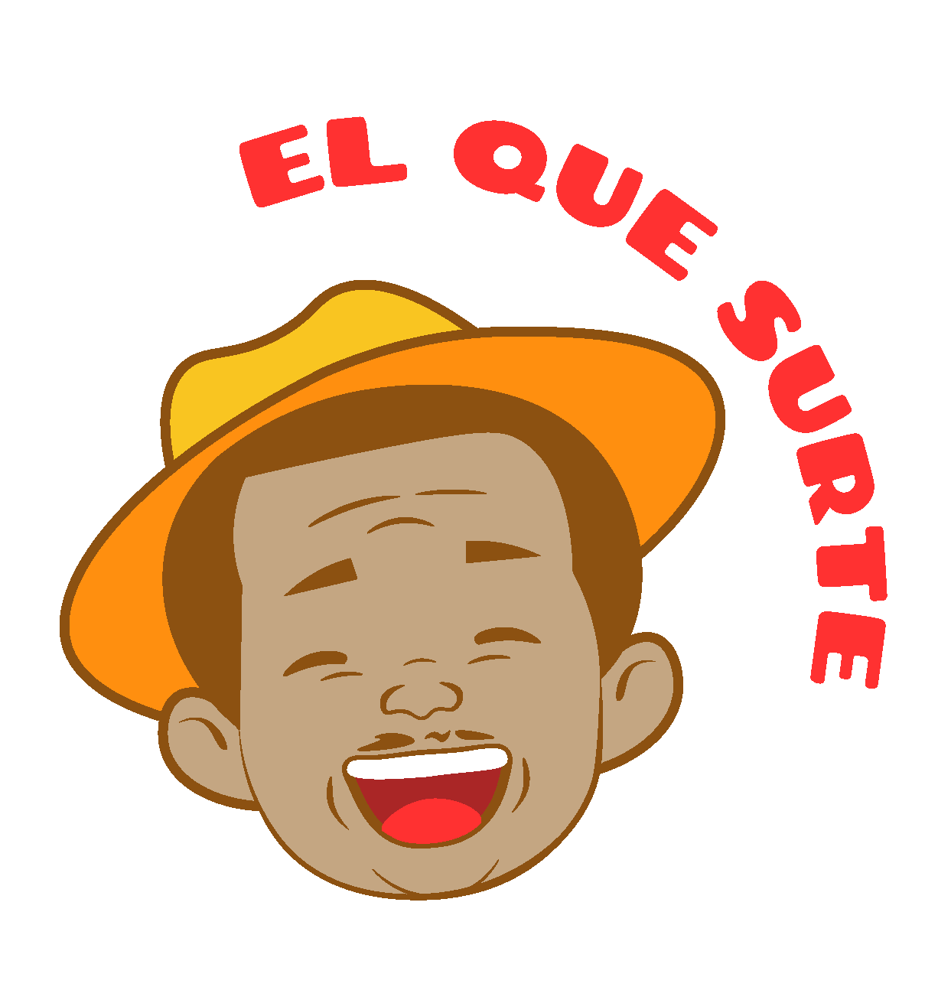
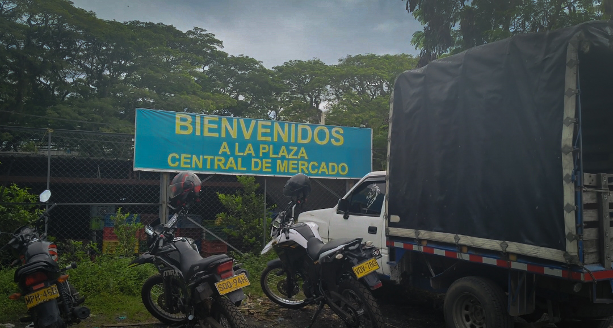

Bienvenidos a nuestra casa
Un viaje al nucleo de Cartago a través de sus sabores y su gente.
Descubre el proyecto

sinopsis
La Plaza de Mercado de Cartago no es solo un punto de venta: es el pulmón cultural donde las tradiciones se mantienen vivas a través de los sabores y el esfuerzo diario de nuestra gente.
Este proyecto busca resaltar el valor patrimonial y humano de cada rincón, desde el aroma del café hasta la sonrisa de quienes nos alimentan.
Cortometraje
"El Que Surte" es un cortometraje documental que captura la esencia de la Plaza de Mercado de Cartago — sus colores, sus voces y las manos que cada día construyen comunidad desde un puesto de frutas, un fogón o una sonrisa.
Una pieza audiovisual que invita a mirar de cerca lo que solemos pasar por alto: la belleza de lo cotidiano y el valor de nuestra identidad cultural.
Ver CortometrajeTestimonios
Encuéntranos
Estamos en el corazón de Cartago, Valle del Cauca. Ven y vive la experiencia de nuestra plaza.
Contáctanos
@elquesurte
El Que Surte
Correo
elquesurte@gmail.com
Teléfono
+57 321 573 5527
Ubicación
Cl. 21 #3-50, Cartago, Valle del Cauca